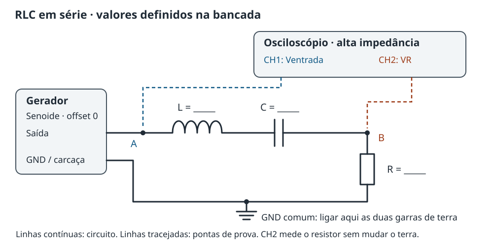

Varie a frequência de uma senoide e descubra onde o circuito responde mais. Meça a tensão no resistor para acompanhar a corrente, a fase e o efeito do amortecimento.
PRCLFBE
Gerador + osciloscópio
R, L e C definidos na bancada
Montagem
Um circuito em série, duas leituras de tensão e um único terra comum. Preencha os valores no relatório antes de iniciar a varredura.
O que vamos investigar
Encontrar a frequência de máxima resposta e compará-la com a previsão de L e C.
Relacionar a tensão no resistor com a corrente do circuito.
Observar o adiantamento e o atraso da corrente em relação à entrada.
Medir a largura da ressonância e, se houver outro resistor, investigar o amortecimento.
Material por bancada
Gerador de funções com saída senoidal e frequência ajustável;
osciloscópio, preferencialmente de dois canais, e pontas de prova;
um indutor, um capacitor não polarizado e um resistor; outro resistor para comparação, se disponível;
protoboard, cabos BNC/adaptadores, jumpers curtos e multímetro;
medidor de indutância e capacitância, se disponível.

Figura 1. Ligação física. O resistor fica junto ao GND para que CH2 meça diretamente sua tensão. Em telas pequenas, deslize o desenho ou abra o esquema ampliado.
Valores definidos no dia
Escolha os componentes disponíveis com o professor ou técnico. Registre valores nominais, tolerâncias e medidas independentes; os espaços abaixo também constam da folha para impressão.
Grandeza
Nominal
Medido / adotado
Unidade / observação
Indutância L
________
________
H / mH / µH: ______
Capacitância C
________
________
F / µF / nF: ______
Resistor R, ensaio A
________
________
Ω / potência: ______
Resistor R, ensaio B
________
________
Ω / se disponível
Resistência DC da bobina rL
________
________
Ω
Resistência de saída Rs
________
________
Ω / consultar o manual
Amplitude de entrada
________
________
Vpp / CH1
Faixa de frequências
________
________
Hz / gerador e osciloscópio
Converta antes de calcular: 1 µH = 10⁻⁶ H, 1 mH = 10⁻³ H, 1 nF = 10⁻⁹ F e 1 µF = 10⁻⁶ F. Use \(f_0=1/(2\pi\sqrt{LC})\) para planejar uma faixa que alcance os dois lados da ressonância.
Como ligar e ajustar
Saída desligada: meça R e a resistência contínua da bobina fora do circuito. Meça L e C se houver instrumento adequado. Não confunda a resistência em ohms com a indutância.
Feche a malha: saída do gerador → L → C → R → retorno do gerador. Use capacitor não polarizado e conexões curtas.
Conecte as pontas: CH1 no nó A e CH2 no nó B. As duas garras de terra vão ao mesmo GND, junto ao terminal inferior de R.
Configure o osciloscópio: entrada de alta impedância, atenuação igual à da ponta, acoplamento DC e disparo por CH1. Ajuste V/div e tempo/div para mostrar alguns ciclos sem corte.
Configure o gerador: senoide, offset zero, amplitude pequena definida na bancada. Registre a configuração de carga e confirme a amplitude real em CH1 antes de aumentar o sinal.
Teste a faixa: confira uma senoide limpa nos dois canais e planeje frequências abaixo e acima de f₀. Respeite a banda, a amostragem e os limites dos instrumentos e dos componentes.
Fundamentos
Do circuito à equação diferencial; da resposta senoidal à condição de ressonância. A mesma lei das malhas do experimento RC agora inclui o indutor.
1. Do RC ao RLC: escrevendo a equação
No experimento de carga e descarga, o capacitor armazenava energia e o resistor a dissipava. Agora o indutor também armazena energia, em seu campo magnético, e o gerador fornece uma excitação periódica.
Seja q a carga na placa de referência do capacitor e i = dq/dt a corrente da malha. Modele o gerador por uma fonte ideal interna \(v_s(t)=V_{s,p}\cos(\omega t)\) em série com sua resistência \(R_s\). Chame de \(R_e\) a soma das resistências externas: o resistor R, as perdas da bobina e as perdas série do capacitor, quando relevantes. Assim, \(R_\Sigma=R_s+R_e\).
Esta é uma EDO linear de segunda ordem com coeficientes constantes. A segunda derivada vem do indutor. A aproximação pressupõe componentes lineares, parâmetros aproximadamente constantes na faixa estudada e carregamento desprezível pelo osciloscópio.
2. Transitório e regime permanente
A solução completa é a soma de uma solução homogênea e uma solução particular. Para a homogênea, tente \(q_h=e^{st}\). Substituir na equação sem a fonte dá:
Se \(\alpha=\omega_0\), há amortecimento crítico; acima disso, a resposta livre não oscila. Com resistência positiva, o transitório desaparece. Na varredura, esperamos a estabilização e medimos a solução periódica forçada. Sua frequência é a do gerador, não \(\omega_d\). A frequência livre amortecida e a frequência de máxima corrente forçada são grandezas distintas.
3. Tente uma senoide e determine sua amplitude
Como a fonte é senoidal, tente uma combinação de cosseno e seno, que permite uma defasagem: \(q_p=A\cos(\omega t)+B\sin(\omega t)\). As derivadas são:
O denominador é o módulo da impedância. As reatâncias são \(X_L=\omega L\) e \(X_C=1/(\omega C)\): uma aumenta com a frequência e a outra diminui.
4. Onde aparece a ressonância?
Com \(V_{s,p}\) e \(R_\Sigma\) constantes, a corrente é máxima quando o denominador é mínimo. Como o termo quadrático nunca é negativo, o mínimo ocorre em \(X_L-X_C=0\):
Nesse ponto, \(I_{p,\max}=V_{s,p}/R_\Sigma\). As tensões ideais no indutor e no capacitor têm amplitudes iguais e fases opostas; elas se cancelam na soma da malha, mas não são individualmente nulas. Podem ser maiores que a tensão de entrada.
A energia alterna entre \(U_C=q^2/(2C)\) e \(U_L=Li^2/2\). A fonte repõe a energia dissipada nas resistências. O resistor limita a corrente e controla a largura da resposta.
5. O que os dois canais realmente medem
CH1 mede \(v_{\mathrm{in}}\), nos terminais externos do gerador, depois de \(R_s\). CH2 mede \(v_R=Ri\). Para senoides, razões de amplitudes de pico, pico a pico ou RMS são iguais quando se usa a mesma convenção nos dois canais.
O máximo de H também ocorre em f₀ e vale \(H_{\max}=R/R_e\). No modelo externo sem perdas adicionais, \(R_e=R\) e \(H_{\max}=1\). Normalizar por CH1 ajuda a separar a resposta do circuito das variações da tensão aplicada.
A fase da tensão no resistor em relação à entrada é:
Abaixo de f₀: predomina a reatância capacitiva; corrente e CH2 adiantam CH1, \(\phi>0\).
Em f₀: as reatâncias se compensam; CH2 e CH1 estão em fase.
Acima de f₀: predomina a reatância indutiva; corrente e CH2 atrasam CH1, \(\phi<0\).
6. Largura da resposta e fator de qualidade
Na curva H, encontre \(f_1<f_0<f_2\) onde a amplitude cai para \(H_{\max}/\sqrt2\), cerca de 70,7% do máximo. Com entrada constante, isso representa metade da potência no resistor, pois \(P_R=V_{R,\mathrm{rms}}^2/R\). É o nível de −3 dB relativo ao pico, não metade da amplitude.
Para a curva de corrente com fonte interna constante, substitua \(R_e\) por \(R_\Sigma\): \(Q_\Sigma=\sqrt{L/C}/(R_s+R_e)\). Identifique qual curva foi usada. Aqui calcularemos \(Q_H\) a partir de CH2/CH1.
Aumentar R alarga a curva e reduz Q, mantendo f₀ no modelo ideal. A corrente máxima diminui para a mesma fonte interna. Já a tensão no próprio resistor pode aumentar, porque \(V_R=RI\): não conclua que um resistor maior sempre produz menor Vpp.
Resumo da dedução
Escreva a lei das malhas usando \(i=\dot q\), \(v_L=L\dot i\) e \(v_C=q/C\).
Tente uma solução senoidal e encontre a amplitude \(I_p=V_{s,p}/|Z|\).
Meça \(V_R\), obtenha a corrente por \(i=v_R/R\) e compare CH2/CH1 para construir H.
O modelo deixa de ser suficiente quando as perdas variam muito com a frequência, a bobina se aproxima da autorressonância, há saturação, distorção ou carregamento relevante das pontas. A resistência DC da bobina é um ponto de partida, não uma medida de todas as perdas em corrente alternada.
Em cada frequência, uma senoide. Ao reunir suas amplitudes, uma curva de ressonância. Preserve as leituras dos dois canais.
Qual “pico” estamos procurando?
Na tela, a tensão no resistor varia com o tempo. Em regime permanente, ela é uma senoide de amplitude estável, não uma tensão constante. Com o disparo ajustado, o desenho fica parado, embora o sinal continue oscilando.
As duas últimas relações valem para senoides centradas em zero. Use a função Vpp ou conte as divisões entre máximo e mínimo e multiplique por V/div, considerando a atenuação da ponta. A média da senoide é aproximadamente zero e não serve para localizar a ressonância.
O pico da curva de ressonância é o maior Vpp ao variar a frequência, para amplitude de entrada constante. Se a entrada variar, use o máximo de H = VR,pp/Vin,pp. Não confunda o eixo de tempo do osciloscópio com o eixo de frequência do gráfico final.
Varredura e registro
Calcule a previsão: use L e C medidos, ou nominais com tolerância declarada. Escolha uma faixa que cubra os dois lados de f₀; como planejamento inicial, tente cerca de 0,2f₀ a 5f₀, dentro dos limites dos equipamentos.
Faça uma varredura ampla: mantenha o ajuste de amplitude do gerador e observe também CH1. Aguarde a estabilização e anote a frequência, Vin,pp e VR,pp em cada ponto.
Refine o máximo: diminua os passos de frequência perto do pico. Colete pelo menos 15 pontos no total, com maior densidade perto do máximo e dos cruzamentos de meia potência.
Meça a fase: compare cruzamentos ascendentes correspondentes dos dois canais. Registre o período T e \(\Delta t=t_R-t_{\mathrm{in}}\), positivo quando CH2 cruza depois de CH1.
Encontre a largura: calcule H em cada ponto e procure ambos os cruzamentos em Hmax/√2. Amplie a faixa se necessário e possível; sem os dois cruzamentos, não declare Q medido.
Compare resistores: desligue a saída, troque apenas R, registre o novo valor e repita com L e C fixos. Use o mesmo critério de amplitude e de normalização.
Com apenas um canal, é possível medir amplitudes nos dois nós em momentos diferentes, mantendo os ajustes e verificando a estabilidade. A comparação simultânea e a medida de fase exigem dois canais; registre essa limitação no relatório.
Repita a tabela para cada resistor; acrescente as linhas necessárias.
Faça três gráficos: VR,pp versus f, H versus f e fase versus f. Identifique unidades, componentes e cada resistor. Use frequência em escala logarítmica se a faixa cobrir várias décadas; nunca rotule previsões como medições.
Estime f₀ pelo máximo de H e verifique a fase próxima de zero. Calcule Δf = f₂ − f₁ e QH = f₀/Δf. Interpole entre pontos vizinhos quando necessário e explique o critério; a resolução da varredura limita a localização do pico.
Incertezas e interpretação
Para valores independentes de L e C, a propagação das incertezas-padrão é:
Não trate tolerância de fabricante como incerteza-padrão sem justificar a conversão. Considere ainda ruído em Vpp, resolução dos instrumentos, passo de frequência, resistência AC da bobina, ESR do capacitor e capacitância das pontas. Se as senoides estiverem deformadas, investigue a montagem e a amplitude antes de aplicar relações de senoide pura.
O pico de H e a fase nula indicaram a mesma frequência?
Como a largura mudou quando R aumentou?
A entrada real variou perto da ressonância? O que mudou ao normalizar por CH1?
Por que a corrente pode diminuir enquanto a tensão no resistor aumenta?
O modelo de perdas explica os dados dentro das incertezas?
Relatório
Folha de registro com esquema, componentes a determinar, dados brutos, análise e discussão. Preencha no papel ou edite o arquivo Markdown.